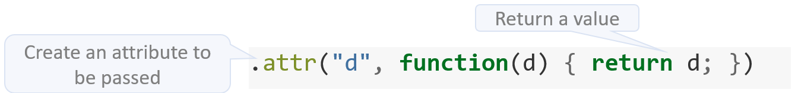

Overview
Integrating Shiny and D3 can be a powerful combination. Deriving insights from data is streamlined when users are able to modify a Shiny input, or click on a D3 visualization, and that action produces new results.
There are two ways that D3 visualizations can be integrated with Shiny. The difference has to do with the direction of the communication:
From Shiny to D3
From D3 to Shiny
Shiny to D3
When going from Shiny to D3, users make changes to Shiny inputs which result in changes to the D3 visualization. The r2d3 package provides two functions that enables this functionality:
-
renderD3()- Works just likerenderPlot(), it creates a reactive D3 plot that can be used as anoutput.renderD3()is used server-side (server):server <- function(input, output) { output$d3 <- renderD3({...}) } -
d3Output()- Akin toplotOutput(), it is used client-side (ui):
Example
This example shows a Shiny app that modifies a D3 plot’s bar length based on the value that the user chooses for the sliderInput():
library(shiny)
library(r2d3)
ui <- fluidPage(
inputPanel(
sliderInput("bar_max", label = "Max:",
min = 0, max = 1, value = 1, step = 0.05)
),
d3Output("d3")
)
server <- function(input, output) {
output$d3 <- renderD3({
r2d3(
runif(5, 0, input$bar_max),
script = system.file("examples/baranims.js", package = "r2d3")
)
})
}
shinyApp(ui = ui, server = server)And here is the app in action:

D3 to Shiny
Having a D3 plot update based on a changing Shiny input is very common. But, what about having an action that happened inside a D3 plot trigger something in Shiny?
For example, we may want Shiny to know that our D3 bar plot was clicked on, and know which bar was clicked. Enabling communication from D3 to Shiny requires changes to both D3 and Shiny code:
D3 script - Add a call to the Shiny JavaScript function
Shiny.setInputValue(). To useShiny.setInputValue(), you will needshinyversion 1.1 or above.Shiny script - Add a reactive function that looks for the change and performs an action based on the selected value.
Example
In this example, the bar plot will pass to Shiny the data value of the bar that the user clicked on. Shiny will then display the cosine of the value.
D3 Code
Here is the D3 script:
// !preview r2d3 data=c(0.3, 0.6, 0.8, 0.95, 0.40, 0.20)
var barHeight = Math.ceil(height / data.length);
svg.selectAll('rect')
.data(data)
.enter().append('rect')
.attr('width', function(d) { return d * width; })
.attr('height', barHeight)
.attr('y', function(d, i) { return i * barHeight; })
.attr('fill', 'steelblue')
.attr("d", function(d) { return d; })
.on("click", function(){
Shiny.setInputValue(
"bar_clicked",
d3.select(this).attr("d"),
{priority: "event"}
);
});First, we need to decide which attribute (.attr) is going to be passed to Shiny when the user clicks. Any existing attribute can be passed, such as the value of y or width, but because no current attribute contain the raw value of the data, a new made up attribute is added, we called it d. The d attribute is set to rerun the d variable.

Next, the on() function is used to capture an event inside the plot.The first argument is “click”, indicating that we want it to be activated when someone clicks on the plot. The second argument of on() is a function, this function will contain a call to the Shiny.setInputValue() JS function. The first argument of the Shiny JS function is the name that the Shiny app will be looking for. In this case, we will use bar_clicked. The second argument is the value that is returned to Shiny, and for that, we will use the d attribute created previously. The third argument, {priority: "event"}, is an option for input values that want to be treated less like values to be monitored, and more like events that are not to be missed.

Shiny Code
Here’s the code for the Shiny application that interacts with D3:
library(r2d3)
ui <- fluidPage(
verbatimTextOutput("selected"),
d3Output("d3")
)
server <- function(input, output) {
output$d3 <- renderD3({
r2d3(
c(0.3, 0.6, 0.8, 0.95, 0.40),
script = "bar.js"
)
})
output$selected <- renderText({
bar_number <- as.numeric(req(input$bar_clicked))
if (bar_number > 0) cos(bar_number)
})
}
shinyApp(ui, server)The ui contains a text output named selected. Server-side, a reactive function, called output$selected() will used to capture the changes of the bar selection.
In the D3 script, we called Shiny.setInputValued() with an input named bar_clicked. This can now be used as if was an Shiny input in the app. In this case, the name to track will be: input$bar_clicked. The Shiny.setInputValued() JS function is recognized by the shiny package version 1.1 and above.
The output$selected() function uses renderText() to display the cosine of the bar that was clicked on. The call to input$bar_clicked is used inside renderText() to execute the cos() calculation.
The default value of input$bar_clicked will be NULL at the startup of the app. In this state you won’t want to perform any calculation (as it would result in an error) or display any output. Shiny’s req() function can be used to prevent errors in this case req() stops reactivity if the value of the variable passed as an argument is not valid, read more about this function in Shiny’s official site: Check for required values
Here is the Shiny application in action: